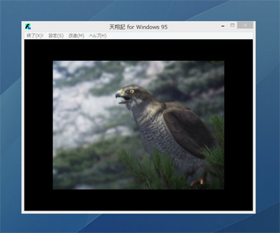
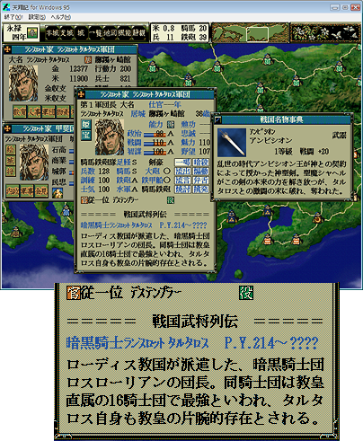
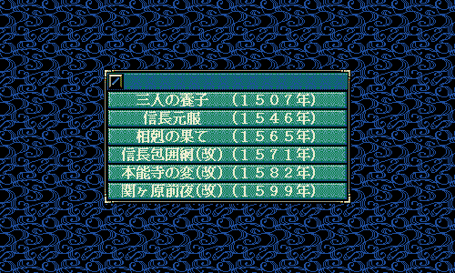
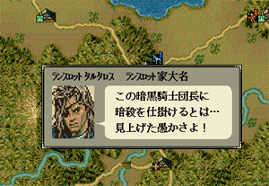

改造と一言で表されていますが、実は｢改造｣には大きな分類があると思います。
その分類とは、
⇒解像度の改善、256色切り替わりの改善、ムービースキップ等、天翔記のCDメディア不要化、CDイメージそのものの不要化、等
A1.これらはフルカラーキットや、汎用ツールで、現段階で、ほとんど実現されています。
R1.BGMが鳴らなくてよいのであれば、ゲーム起動において、TSModはCDを必要としません。
⇒武将の顔をはじめグラフィックの古臭さの改善、フォントが見切れてて見苦しいなどの改善、各種ムービーが古臭いなどの改善
⇒各種グラフィックの差し替え

(※フルカラーモードのまま起動している。ムービーが差し変わっている)
A1.これらは当サイト、及び、当サイトのTSModにて、現段階で、ほとんど実現されています。
R1.イベント用等の一部の顔グラ、および、イベント用のイメージ、UIイメージなどの差し替え方法は、現段階では決定的な方法はありません。
⇒ＢＧＭの変更、ＳＥの変更
A1.これらは現段階で、TSModや、当サイトのScenarioModにて、SEは当サイトにて、全て実現されています。
R1.Windows Vista 以降のOSにおいてBGMがループしない、という問題は、TSModでは解決されています。
以下複数項目の、｢ゲーム開始前｣での変更、もしくは、｢セーブデータ｣に対しての｢オブジェクト属性｣の変更
A1.これらは現段階で、ScenarioMod、シナリオエディタ、もしくはセーブエディタにて、全て実現されています。
⇒オリジナル顔ぐらを天翔記内の顔グラエディタツールではなく、外部画像ファイル(BMPやPNG等)から変換・差し替えする方法
⇒｢ゲーム開始前｣での変更、もしくは、ゲーム途中の｢セーブデータ｣に対して、差し替えする方法

(※オリジナル顔グラ、外字を使用した名称や官位、オリジナル列伝、オリジナル家宝)
A1.これらは現段階で、TSMod、もしくは、列伝エディタ、フルカラー顔グラキット、フルカラー家宝グラキットなどで、全て実現されています。
R1.セーブデータに対しても、当サイトが提供するセーブデータで実現されています。
A1.これらはヘックスマップエディタにて、実現されています。
A1.これらはTSMod にて実現されています。
(※名称が紛らわしいですが、｢シナリオ｣とは｢稲葉山改名｣といったイベントを指すものでは｢なく｣、｢1560年｣といった選択時の｢大名･武将･城･家宝･官位｣の分布や、ゲーム開始後に変化する武将･家宝･城情報などのことです。)

(※新たなるシナリオ群や、既存シナリオを改変したモノ)
A1.これらは現段階で、シナリオエディタにて、実現されています。
(※｢イベント｣とは、｢稲葉山改名｣や｢武将の突撃時のメッセージ｣、｢各種コマンド実行時のメッセージ｣等、我々が｢イベント｣｢メッセージ｣という言葉で認識するものと考えて良いでしょう。
｢本能寺の変｣など、大掛かりなものから、常日頃から目にしているものまで様々な種類があります。)

(※このオリジナル武将のみが言う、鼓舞時の特殊なオリジナルメッセージ。)
A1.これらは現段階で、当サイトのTSMod / ScenarioMod にて、完全に実現されています。
→1332人という全武将数制限の撤廃
→500人という同時登場武将数制限の撤廃
→各階級に対応する兵数の変更
→各城の商業値や農業値などの制限の撤廃
A1.これらは当サイトのTSModにて半分ほど、実現されています。
R1.商業値や農業値のMax値は、TSModの管理下にはありますが、値を変更していません。
R2.500人という同時登場武将数の制限の撤廃は、最も難度が高い項目の一つであり、実現されていません。
難易度をあまり変更せずに、ゆったりとしたテンポへと調整するには？
A1.TSModの設定(TSMod.ini)にて、｢戦争:60｣｢徴兵:20｣などというように、必要行動力を増やしてみましょう。
また、TSMod.ini内の｢徴兵可｣の回復量の変更、という項目を5などにするのも良い方法です。